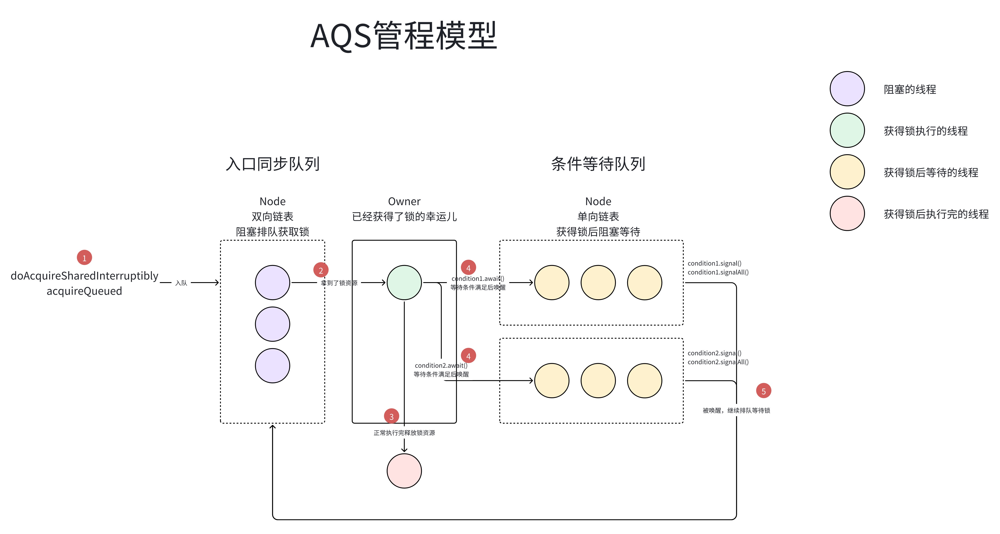
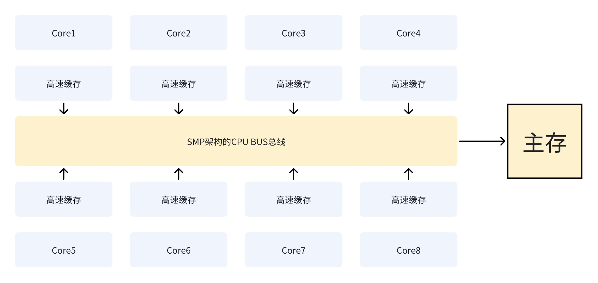
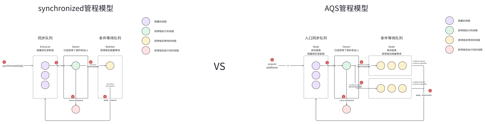
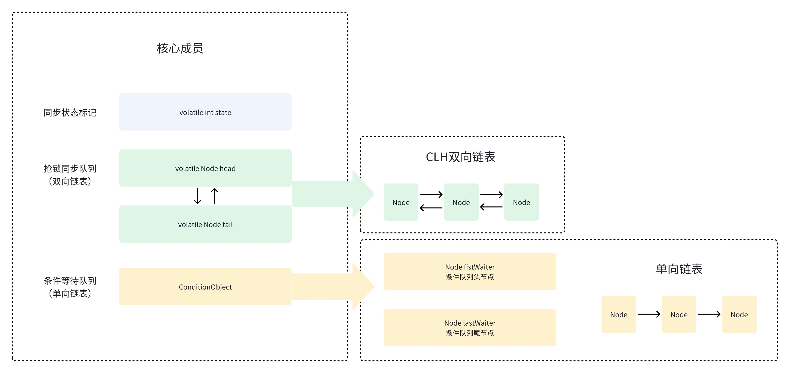
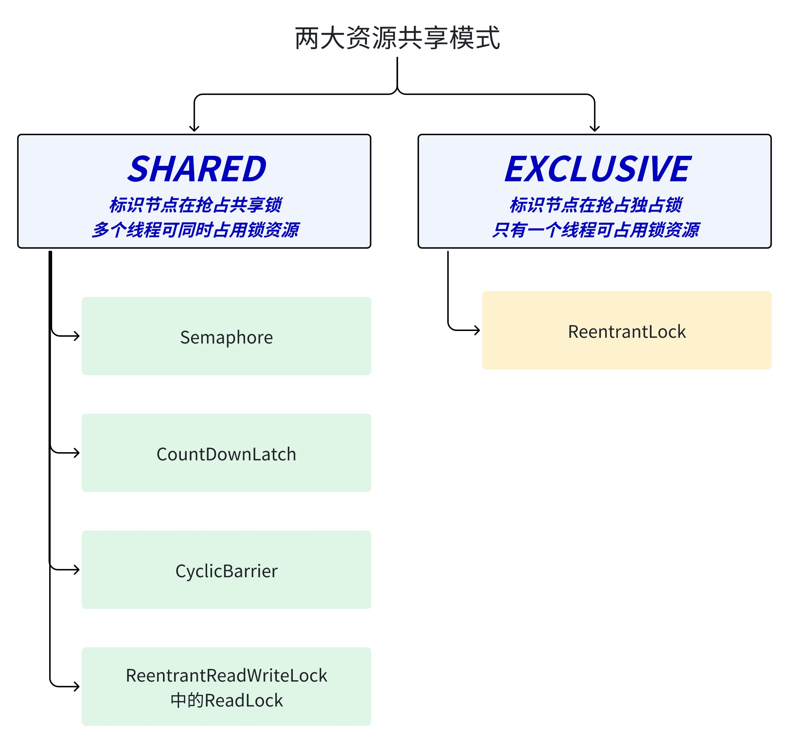
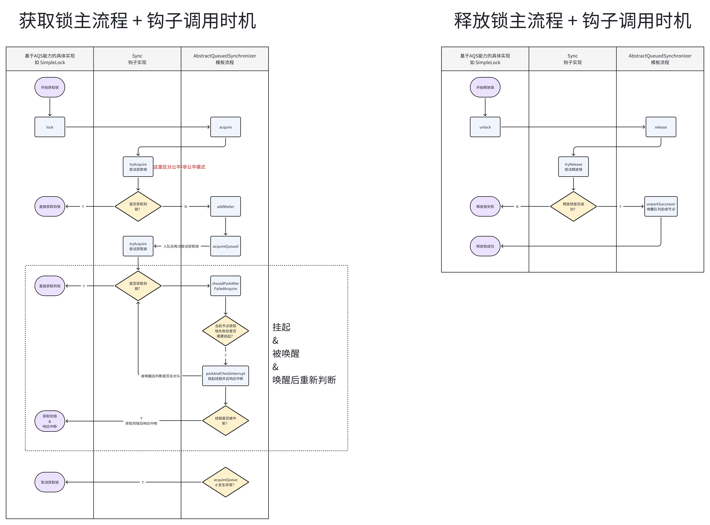
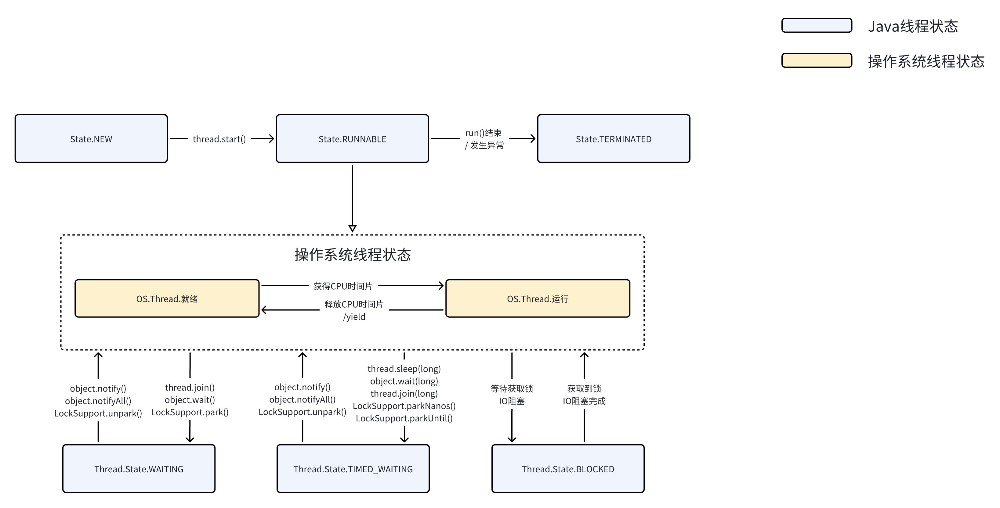
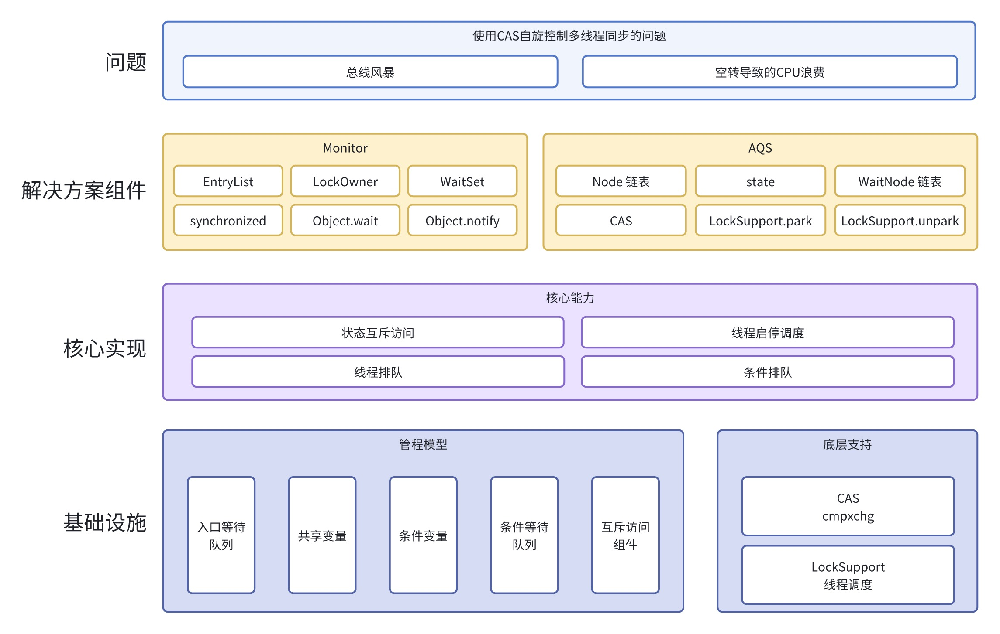

本文尝试归纳整理作者所了解的AQS架构设计原理。首先从解决的问题场景出发，再到AQS核心设计方案，最后会引入一些底层能力的简要说明。
开始前先看看管程模型的图：我个人觉得管程模型其实是理解锁、AQS的 抓手，对于我们理解AQS至关重要。

当有一块新知识、新业务、新系统需要迅速上手时，我的一个思路就是顺藤摸瓜。那么找到这个藤就很关键。对于AQS来说，管程模型就是藤。同时管程模型还承载了核心设计的架构与流程，因此一张图可以简明扼要地帮助我们认识、理解AQS。
下面开始正文。
0.引子：实现一个简单的锁
对于多线程的环境，我们往往需要通过锁的机制来保证资源访问的正确性、数据的一致性。
下面就是基于自旋实现的一个基本的锁：
|
|
我们可以在业务方法中使用上面实现的锁：
|
|
1.AQS解决的问题
在SMP架构的CPU上，并且是多线程竞争激烈的情况下，执行上面的业务方法，每个线程对应核都需要频繁与总线bus交互，总线负责将当前最新的状态刷到主存，过程如下：

当竞争状态严重时，上面基于自旋实现的锁，会有一些问题：
bus总线风暴- 过多自旋浪费
CPU资源
关于总线风暴的解释：CAS操作和volatile一样都需要CPU进行通过MESI协议各个内核的Cache一致性，会通过 CPU的BUS(总线)发送大量MESI协议相关的消息，产生Cache一致性流量。因为总线被设计为固定的通信能力，如果Cache一致性流量过大，总线将成为瓶颈，这就是所谓的总线风暴。
而解决上面问题的常用手段有:
- 分散操作热点
- 使用队列削峰
二者都是「空间换时间」的思路。
解法1的典型案例就是juc中的LongAdder，相比AtomicLong，LongAdder将单个CAS热点 (value值)分散到了一个cells数组中，等到需要获取数据时才做加和运算。
解法2的典型案例就是synchronized、AQS，他们的原理都是将发生CAS争用的线程加入一个队列中排队，降低CAS争用的激烈程度。
这里的队列以及对共享变量的管理方式，我们叫它MESA管程模型。
2.核心设计
AQS最为核心的设计，就是基于Java库实现了一套管程模型。甚至Java早期提供的synchronized锁机制，也是管程模型。
AQS、synchronized二者基本流程对比如图：

2.1管程模型
管程模型的一些基本规则：
- 持有共享变量；
- 控制共享变量的操作；
- 线程操作共享变量的前提是必须获得锁才能进入管程内部；
- 获取锁失败，则进入同步队列阻塞等待；
- 进入管程内部，则判断条件是否满足，不满足则进入条件队列阻塞等待；
- 条件达成后，重新进入同步队列排队；
这里的流程规则可以结合上面的流程图来理解。
2.2AQS核心组件
基于上面的模型，java.util.concurrent.locks.AbstractQueuedSynchronizer中有以下核心组件：
- 同步状态标记：
volatile int state
- 抢锁同步队列（双向链表）：
volatile Node headvolatile Node tail
- 条件等待队列（单向链表），实际使用条件队列时，通过持有对应的
ConditionObject获取条件队列的操作方法：ConditionObjectNode fistWaiterNode lastWaiter

2.3AQS核心流程
有了组件，我们还需要定义如何使用这些组件、在哪一步用对应的组件，这就是AQS作为一个抽象类通过模板方法设计模式定义的主流程。
2.3.1资源共享方式
AQS中设计了两套资源共享的方式：
- Exclusive(独享锁)
- 只有一个线程能占有锁资源，如
ReentrantLock。独享锁又可分为公平锁和非公平锁。
- 只有一个线程能占有锁资源，如
- Share(共享锁)
- 多个线程可同时占有锁资源，如
Semaphore、CountDownLatch、CyclicBarrier、ReadWriteLock的Read锁。
- 多个线程可同时占有锁资源，如

独占与共享模式的主要区别有两点：
- 资源占用模式不同：简单来说就是独占的
state通常为0-1，而共享的state通常大于1。- 独占模式下同一时刻只能允许一个线程获得锁，其他线程此时只能进入队列阻塞等待，典型实现案例是
ReentrantLock； - 共享模式下同一时刻允许多个线程获得锁，典型实现例子是
Semaphore/CountDownLatch；
- 独占模式下同一时刻只能允许一个线程获得锁，其他线程此时只能进入队列阻塞等待，典型实现案例是
- 线程等待与唤醒策略不同：简单来说就是独占模式一次只唤醒一个线程，而共享模式则根据
state数量一次唤醒多个线程。
2.3.2AQS主模板流程
针对不同的资源共享方式，有不同的主流程，即对应共享锁、独享锁模板流程。
除了模板中已定义的核心主流程，具体的子类实现可以通过钩子方法自定义想要的核心节点能力。
独占锁可以自定义：
tryAcquire(int)，尝试获取资源。若成功则返回true，若失败则返回false。tryRelease(int)，尝试释放资源。若成功则返回true，若失败则返回false。isHeldExclusively()，判断该线程是否正在独占资源。只有用到condition条件队列时才需要去实现它。
共享锁可以自定义：
tryAcquireShared(int)，尝试获取资源，负数表示失败，0表示成功，但没有剩余可用资源，正数表示成功，且有剩余资源。tryReleaseShared(int)，尝试释放资源，若成功则返回true，若失败则返回false。
我们先以独占锁为例，用泳道图梳理一下AQS中获取锁与释放锁的主流程与钩子方法的调用时机：

可以看到，在AQS主流程中主要实现节点入队出队、尝试获取锁、线程启停、节点状态机流转等逻辑。而钩子方法中主要实现同步状态的更新、获取。
共享模式的主流程与钩子方法与独占模式大同小异，本文暂不做过多描述。
3.底层能力的支持
对于AQS实现用到的一些底层能力，主要是一些我之前学习时候的答疑。
Q：如何保证状态更新的一致性？
A：使用CAS能力即可，LockSupport帮我们封装了cmpxchg指令，从CPU维度提供了原子更新能力。
Q：如何实现线程的挂起唤醒能力？
A：使用LockSupport.park/LockSupport.unpark即可，同样是用了unsafenative的能力，能够用来通过Java方法调用操作系统操作线程的状态的能力。
对应状态机可以参考：

4.小结
最后用一张图总结本文的内容： 
以上。